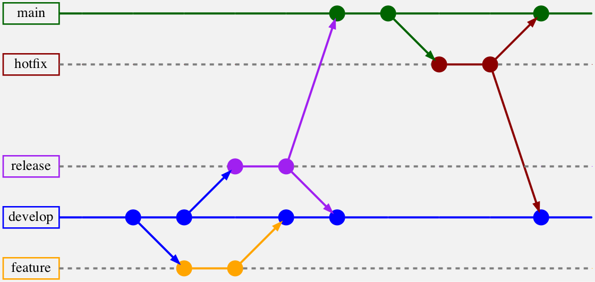
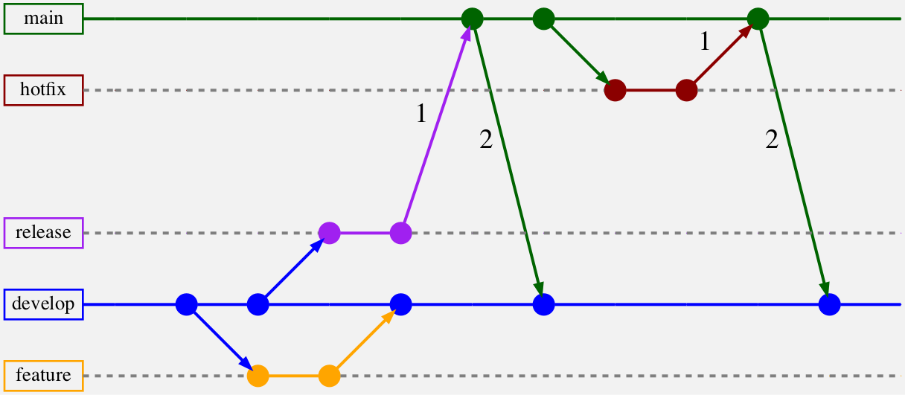
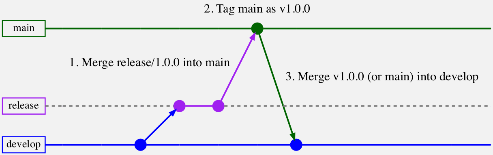
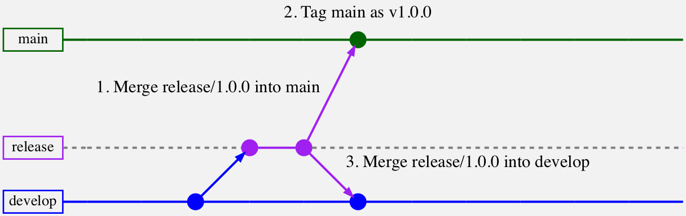

10.Gitflow工作流程¶
Gitflow是Vincent Driessen在他2010年的博文A successful Git branching model中介绍的一个工作流程。
其核心是，Gitflow是分支工作流程的一个专门版本。它引入了一些不同类型的分支，并对代码如何在它们之间流动制定了明确的规则。
文森特于2020年3月5日在其原始博文的开头发布了一个名为"反思的说明"的十年更新。在他的说明中，他建议你应该考虑这是否是适合你的工作流程。
他指出，Gitflow对于版本化软件来说是很好的，但在今天这个持续部署的时代，一个更简单的方法可能会更好。他用以下的话结束了他的说明："自己决定吧"。
在本章中，你将了解构成Gitflow的规则，以及它们背后的原因。这将使你能够决定Gitflow是否适合你。
何时使用Gitflow¶
如果你正在构建的软件有明确的版本划分，特别是需要同时支持多个版本的软件，那么Gitflow就非常合适。例如，你可能会发布一个付费升级的2.0版本的桌面应用程序，但仍然希望继续发布1.0版本的小错误修复更新。
如果你的项目有固定的发布周期，Gitflow也是一个很好的选择。它的发布分支工作流程允许你在主开发分支上继续进行正常的日常开发时，测试和稳定你的发布。
用Gitflow管理大型项目更容易，因为它有一套定义明确的代码在分支间移动的规则。
对于那些倾向于持续部署模式的场景，例如网络开发，Gitflow就不太理想。在这种情况下，Gitflow的发布工作流程可能会增加不必要的额外开销。
章节路线图¶
在本章中，你将首先快速了解Gitflow的基本概念。你会了解到不同的长寿命和短寿命分支，以及如何创建和合并它们的规则。
然后安装git-flow展，这些扩展不是使用Gitflow工作流本身所必需的，但会使它更容易被采用。术语git-flow将被用来指代扩展，而Gitflow将被用来指代工作流本身。
安装后，你将学习如何使用git-flow扩展命令来创建和合并Gitflow使用的各种类型的分支。
Gitflow分支的类型¶
Gitflow使用两个长寿的分支。main（或master）和develop，以及三种主要类型的短寿命分支。feature、release和hotfix。虽然你永远不会删除长生命周期的分支，但一旦你把短生命周期的分支合并到长生命周期的分支，你就会删除它们。
关于如何和何时创建短命枝，以及将其合并到长命枝的规则，都有明确的规定。稍后你会了解到这些规则。但首先，你要了解各种分支类型的目的。
长寿的分支¶
Git本身使用一个长期分支，通常命名为main或master。Gitflow引入了一个额外的长期生产分支的概念。
Gitflow没有为这个生产分支引入新的名称，而是将main分支重新用于这个角色。这意味着main分支现在只能包含已经发布到生产环境中的代码，或者由于被合并到main而将被发布到生产环境中的代码。
因此，Gitflow增加了一个develop分支，其作用与之前的main分支相同，即用于正常的日常开发。
代码只能被添加到长生命周期的分支中，并通过短生命周期的分支在它们之间移动，接下来你会了解到这一点。
短暂的分支¶
三个主要的短期分支是feature、release和hotfix。
Feature branches：就像典型的分支工作流程一样，你在这里进行所有的新开发。当你为你的应用程序添加新的功能时，你会创建一个feature分支，例如一个新的设置屏幕或对登录流程的改进。
Release branches：使用这些分支来准备和测试develop分支上的代码，以便进行生产发布。如果你发现任何bug，就在release分支上修复它们。这些分支也适用于更新发布说明和版本等任务。
Hotfix branches：这些分支用于修复已经在生产中的bug。
还有一种不太常用的分支，称为support分支。只有当你需要支持以前发布的软件版本时，你才会使用这些分支。
创建和合并分支的规则¶
以下是创建和合并分支的规则：
Feature branches只从develop中创建，并且只合并到develop中，因为这是你用于日常开发的分支。
Release branches只从develop创建，并被合并到main和develop。额外合并到develop确保你在release分支上提交的任何更新或错误修复都能回到develop中。
Hotfix分支只从main创建，并被合并到main和develop。这可以确保你在生产中修复的错误在开发中也得到修复。
这里有一张图片，显示了分支和合并流程的例子：

实线代表长寿的分支，虚线代表短寿的分支，箭头代表分支创建和合并的流程。
下面是一些关于分支创建和合并规则的另一种思考方式，这可能有助于你更好地掌握流程。
- 你可以从
main创建的唯一分支是hotfix分支，因为它只用于修复生产中的错误。你不能从develop创建hotfix分支，因为合并它们也会部署自上次发布后提交到develop的任何额外功能。 - 任何合并到
main的代码，如果还没有在develop中，就需要添加到develop中。这就是为什么当你把release和hotfix分支合并到main时，你也需要把它们合并到develop。 - 用合并到
main的代码更新develop的另一种方法是随后将main合并到develop。因此，当你把release或hotfix分支合并到main后，你再把main合并到develop。可以认为这是back-merging到开发中。
使用这种将更新的main分支回合并到develop的替代方法的流程是这样的：

这两种方法都可以接受，但回合并的方法有一点好处，你会在后面了解到。
接下来，你将安装git-flow扩展，并开始玩弄各种类型的短命分支。
安装git-flow¶
git-flow扩展是一个Git子命令库，可以让我们更容易采用Gitflow工作流。例如，一条git flow release finish命令就能将你的发布分支合并到main，对发布进行标记，再将其合并到开发中，最后删除发布分支。
从本质上说，git-flow扩展运行的是编码特定Gitflow工作流程的Git命令序列。
安装git-flow扩展有两个选择。第一个是来自Gitflow的创造者Vincent Driessen；你可以在https://github.com/nvie/gitflow。
不幸的是，Vincent Driessen已经不再维护这个项目，所以不建议安装这个版本。它的最后一次发布是在2011年，如果你在macOS上简单地运行brew install git-flow，你就会安装那个过时的版本，所以不要这样做!
推荐安装的版本是Peter van der Does的AVH版本，它可以在https://github.com/petervanderdoes/gitflow-avh，在Homebrew上可以用git-flow-avh。
Note
如果你已经安装了默认的git-flow，你可以通过brew uninstall git-flow来卸载它。或者，如果你已经安装了这两个版本，你可以通过brew link --overwrite git-flow-avh来覆盖旧版本。
如果你需要安装Homebrew，请参阅 https://brew.sh。要在Windows上安装git-flow-avh，见https://github.com/petervanderdoes/gitflow-avh/wiki/Installing-on-Windows。
运行以下程序来安装AVH版的git-flow：
brew install git-flow-avh
要验证你所安装的版本，请运行以下程序：
git flow version
你应该看到1.12.3 (AVH Edition)。如果你看到的是0.4.1，你安装的是原始的、未维护的版本。关于如何卸载它，见上面的说明。
如果你在安装git-flow时遇到困难，你也可以使用git-flow会运行的手动Git命令，本章也会提供这些命令。
接下来，你将配置启动项目以使用git-flow。
初始化git-flow¶
从本章的starter文件夹中解压repos.zip。你将只在alex/checklists仓库中工作，所以之前章节中的beth和chad目录不包括在内。
你会看到starter中的以下解压目录：
starter
└── repos
├── alex
│ └── checklists
└── checklists.git
和上一章一样，本地的checklists.git目录被配置为alex/checklists版本库的远程源。这意味着当你从alex/checklists运行git push时，它将推送到checklists.git目录。
打开一个终端窗口，cd到starter/repos中的alex/checklists目录。
cd path/to/projects/starter/repos/alex/checklists
在你开始使用git-flow之前，你需要初始化一些配置设置。
运行下面的命令，为这个仓库初始化一个git-flow配置：
git flow init
按Enter接受每个默认值。然而，对于 Version tag prefix?问题，使用小写的v，因为这是一个非常普遍的惯例。
你会看到下面的内容：
Which branch should be used for bringing forth production releases?
- main
Branch name for production releases: [main]
Branch name for "next release" development: [develop]
How to name your supporting branch prefixes?
Feature branches? [feature/]
Bugfix branches? [bugfix/]
Release branches? [release/]
Hotfix branches? [hotfix/]
Support branches? [support/]
Version tag prefix? [] v
Hooks and filters directory? [...]
如果你不小心错过了这个问题，你可以使用git flow init -f来重新初始化它。另外，你可以手动编辑.git/config文件，将versiontag =行改为versiontag = v，然后保存。
Gitflow使用分支前缀来区分不同类型的分支。当使用各种git-flow start命令创建指定类型的分支时，这些前缀将被自动添加。
Note
你可能注意到还有一个bugfix类型的分支。这种类型的分支在Vincent的git-flow实现中和他的原始工作流中都不存在。这是在git-flow-avh中添加的，用于修复develop上的错误。它可以被认为等同于feature分支，但有一个替代的前缀，更清楚地表明该分支是用于修复错误而不是功能。
运行git flow init也会从main分支创建一个develop分支，如果一个分支还不存在的话。
现在你已经准备好用Gitflow添加一个新特性了，接下来要做的就是这个。
创建和合并特性分支¶
Gitflow使用特性分支来处理新特性的工作，就像分支工作流程那样。由于Gitflow的日常开发分支现在是develop而不是main，所以你可以从develop创建特性分支，并在完成后将其合并回develop。你不能从main或任何其他短期分支创建特性分支。
确保你仍在checklists文件夹中，并通过运行以下命令创建一个feature分支：
git flow feature start update-h1-color
这相当于从开发分支运行以下命令：
git checkout -b feature/update-h1-color # equivalent to above
你会看到下面的Summary of actions，证实了该命令的作用：
Summary of actions:
- A new branch 'feature/update-h1-color' was created, based on 'develop'
- You are now on branch 'feature/update-h1-color'
现在，你要做一个小改动，并提交这个功能。打开style.css，在第二行，将h1标签的颜色从海军色改为蓝色。
h1 {
- color: navy;
+ color: blue;
}
运行下面的命令来提交更改：
git commit -am "Updated h1 color from navy to blue"
现在你已经完成了这个特性，你将使用git-flow将feature/update-h1-color分支合并到develop。
虽然之前的git flow feature start命令并没有比实际的签出命令节省多少打字量，但这个命令的finish版本做得更多。
在一条命令中，它将执行以下三个动作：
1. Checkout the develop branch # git checkout develop
2. Merge the feature branch # git merge feature/update-h1-color
3. Delete the branch # git branch -d feature/update-h1-color
运行以下命令来完成该功能：
git flow feature finish
你会看到下面的Summary of actions：
Summary of actions:
- The feature branch 'feature/update-h1-color' was merged into 'develop'
- Feature branch 'feature/update-h1-color' has been locally deleted
- You are now on branch 'develop'
你节省了一些打字的时间，这很好。但个别命令并不难记，因为它们是Git中常用的。那么，为什么要这么做呢？
主要的好处是，git-flow扩展会自动执行Gitflow的规则，防止错误。例如，它们可以防止你不小心从主干上创建一个特性分支，或者不小心把一个已经完成的特性分支合并到主干上。
当你在处理发布分支和热修复分支时，git flow finish命令将为你节省更多的输入（和记忆），因为你需要将它们合并到开发和主干。这是在下一节中学习它们的最佳切入点。
创建和合并一个发布分支¶
Release分支是为即将发布的代码做准备的地方。当日常开发工作在开发分支上继续进行时，它们可以让你运行测试和实现修复。
由于发布分支保存着开发中的发布代码，你可以从develop分支创建它们，并将它们合并到main。同时将它们合并到develop中，以便将提交到发布分支的任何额外的错误修正和更新都返回到develop分支。
你通常用一个版本号来命名发布分支，然后用这个版本号来标记发布。
AVH版本的git-flow比原来的版本有一些改进，包括一个--showcommands选项，它可以显示运行git-flow命令时执行的Git命令。
运行下面的命令来创建一个新的发布分支，并查看其使用的命令：
git flow release start 1.0.0 --showcommands
忽略第一行git config --local ...，git-flow内部使用它来追踪东西。在第二行，你会看到：
git checkout -b release/1.0.0 develop
最后列出的额外的develop参数是release/1.0.0分支的起点（或基础）。这相当于运行git checkout develop，然后git checkout -b release/1.0.0。
现在，你要对发布分支做一个额外的更新。没有任何错误需要修复，但你要添加一个新的VERSION文件。
运行以下程序，添加新的VERSION文件并提交：
echo '1.0.0' > VERSION
git add VERSION
git commit -m "Adding VERSION file for initial release"
现在发布分支已经完成。是时候把它合并到主干分支来部署了。
你还需要把添加VERSION文件的提交带回开发分支。回顾一下，有两种方法可以做到这一点。你可以把release/1.0.0合并到develop，或者把main回合并到develop。
下一步，你将使用back-merge方法，AVH版的git-flow默认使用这种方法。
你将通过输入一条git-flow命令来完成这一工作。
然而，如果你要手动执行这些操作，命令将是：
## NOTE: Do not execute these! You'll be using git-flow for this.
# Merge release into main
git checkout main
git merge --no-ff release/1.0.0
# Tag the release
git tag -a v1.0.0
# Merge main back to develop
git checkout develop
git merge --no-ff main
# Delete the branch
git branch -d release 1.0.0
Note
为了将main合并到develop中，git-flow使用对tag的引用，而不是使用main。结果是一样的，因为标签和main都解析为main上的最新提交。然而，使用标签作为引用会产生一个更具体的提交信息，因为它包括版本。
使用git-flow，运行以下命令：
git flow release finish --showcommands
现在，你需要保存三个提交信息。输入:wq，接受将release/1.0.0合并到main的默认信息。接下来，对于标签信息，输入Tag for 1.0.0 release并以Esc，:wq保存。
在接受最后一条信息之前，注意它说：Merge tag ‘v1.0.0’合并到开发中"。如果你用了main，它就会说。Merge branch ‘main’ into develop。能在实际的合并信息中看到被合并的具体版本是很好的。
再输入一次:wq，接受默认的合并信息。
这是输出的最后一部分，其中第三行确认了标签的回合并：
Summary of actions:
- Release branch 'release/1.0.0' has been merged into 'main'
- The release was tagged 'v1.0.0'
- Release tag 'v1.0.0' has been back-merged into 'develop'
- Release branch 'release/1.0.0' has been locally deleted
- You are now on branch 'develop'
这也反映在你运行的命令中：
git checkout main
...
git merge --no-ff release/1.0.0
...
git tag -a v1.0.0
git checkout develop
...
git merge --no-ff v1.0.0 # instead of: git merge --no-ff main
...
git branch -d release/1.0.0
作为最后的验证，你要检查main和v1.0.0标签是否都指向同一个提交。运行下面的命令来获取标签和main的最新提交：
git -P log --oneline -1 v1.0.0
git -P log --oneline -1 main
Note
-P或--no-pager选项禁用了寻呼机，所以你不需要按q来退出它，而只是直接将输出打印到控制台。
你会看到两者都有相同的信息和提交哈希，类似于：
b01405c (tag: v1.0.0, main) Merge branch 'release/1.0.0'
接下来，你将了解将主干分支反向合并到开发分支与将发布分支合并到开发分支之间的一些区别。
背向合并main与合并release的区别¶
下图显示了将main回合并到develop时发生的步骤：

当你把main合并到develop时，你实际上是把main上所有没有在develop中的东西都合并了。如果你在main上有额外的提交，而你永远不想合并到开发中--你真的不应该--那么你就不能使用这个策略。
但如果你真的需要，AVH版的git-flow提供了一个非回合并的后备选项，使用--nobackmerge或-b标志。在这种情况下，只有最后的合并步骤会有所不同，你可以在下面的图片中看到：

还有一点需要注意的是，在--nobackmerge选项下，main上被标记的提交不是被合并到develop的提交的祖先。这可能会给git describe之类的命令带来问题，因为该命令会找到一个提交中可到达的最近的标签。
使用back-merge选项，标记为v1.0.0的提交是合并到develop上的提交的父本。这意味着git describe能够报告最新的标签是v1.0.0，即使是从开发分支运行。
然而，如果使用--nobackmerge选项，被标记的提交就不是develop上的合并提交的祖先了。git describe只有在main分支运行时才能找到v1.0.0标签，而在develop分支则不能。
在下一节中，你将用--nobackmerge完成一个热修复分支，看看与git describe的输出的区别。
创建和合并一个热修复分支¶
由于hotfix分支是用来修复生产中的错误的，所以必须从main分支中创建它们。
尽管该错误也可能在开发分支中，但你不希望从开发分支中修复它，因为这样做会过早地部署自上次发布以来提交到开发中的任何其他代码。
你需要将hotfix分支合并到main和develop（或通过main的回合并）。和发布分支一样，你用版本号来命名它们，git-flow也会用它来标记合并到main。
从某种意义上说，hotfix分支几乎与发布分支完全一样，只是它们是从 main 而不是 develop 创建的。
因此，事实证明，将颜色从navy改为blue是个错误，应该改为midnightblue。这是一个需要立即部署的紧急修复，不能再等了，要在下一个版本中包含它
运行下面的git-flow命令，启动一个热修复分支：
git flow hotfix start 1.0.1 --showcommands
你会看到，实际执行的命令只是以下内容：
git checkout -b hotfix/1.0.1 main
请注意，在运行该命令之前，你不必确定你是在一个特定的分支上。你开始看到Gitflow的优势了吗？:]
现在，打开style.css，把h1标签的颜色从blue改为midnightblue：
h1 {
- color: blue;
+ color: midnightblue;
}
运行下面的命令来提交更改：
git commit -am "Updated h1 color from blue to midnightblue"
此外，将VERSION文件中的版本号更新为1.0.1。你可以手动编辑该文件，或者直接运行以下命令：
echo '1.0.1' > VERSION
然后提交版本号更新：
git commit -am "Updated VERSION to 1.0.1"
现在，你可以运行git flow hotfix finish，或者简单的git flow finish，来合并你所在的hotfix分支。然而，这次你将使用经典的行为，通过使用--nobackmerge选项将hotfix分支合并到develop。
git flow finish --nobackmerge --showcommands
再次输入:wq，接受合并到main的初始信息，并在标签信息中加入Tag for 1.0.1 release。输入:wq，然后最后一次输入:wq，接受将hotfix/1.0.1分支合并到开发的信息。
你会看到下面的Summary of actions：
Summary of actions:
- Hotfix branch 'hotfix/1.0.1' has been merged into 'main'
- The hotfix was tagged 'v1.0.1'
- Hotfix branch 'hotfix/1.0.1' has been merged into 'develop'
- Hotfix branch 'hotfix/1.0.1' has been locally deleted
- You are now on branch 'develop'
如果不使用--nobackmerge选项，第三行就会说：
- Hotfix tag 'v1.0.1' has been back-merged into 'develop'
你会看到这一点也反映在命令中：
git checkout main
...
git merge --no-ff hotfix/1.0.1
...
git tag -a v1.0.1
git checkout develop
...
git merge --no-ff hotfix/v1.0.1 # not: git merge --no-ff v1.0.1
...
git branch -d hotfix/1.0.1
这就是Gitflow的全部内容! 你已经成功地使用了git-flow来采用Gitflow工作流。通过它，你已经创建并合并了一个特性分支、一个发布分支和一个热修复分支。
现在你将介绍一些最后的细节，即当使用经典方法的--nobackmerge选项时，git describe如何不准确。你还会学到一些关于使用git-flow的帮助，然后你就可以完成本章的学习了
使用git describe¶
git describe命令向你显示可从提交中获取的最新标签。如果该标签在当前提交中，git describe会显示该标签本身。另一方面，如果该标签在某个祖先上，它也会显示额外的提交数量和提交哈希，格式如下：
{tag}-{number-of-additional-commits-from-tag}-g{commit hash}
运行git describe develop，你会看到类似下面的东西，只是哈希值不同：
v1.0.0-4-g19c9939
现在运行git log --oneline -5 develop来获得develop上的五个最新提交：
19c9939 (HEAD -> develop) Merge branch 'hotfix/1.0.1' into develop
d7bd387 Updated VERSION to 1.0.1
e4648d7 Updated h1 color from blue to midnightblue
10bc940 Merge tag 'v1.0.0' into develop
b01405c (tag: v1.0.0) Merge branch 'release/1.0.0'
在git describe的输出中，v1.0.0是标签，4是标签后的附加提交数，827ddd8是你运行git describe时的提交哈希值--也就是develop。
这是误导，因为当前版本是1.0.1，上面的git log命令显示，将VERSION文件更新为1.0.1的提交包含在开发分支中。
之所以显示v1.0.0，是因为你把v1.0.0标签从主干分支回合并到了开发分支，所以开发分支可以访问它。如果它没有被回合并，它就会显示一个错误。
你可以通过运行git describe origin/main来复制这个错误，因为origin/main的提交中没有标签可以访问：
fatal: No tags can describe 'c0623652f3f7979f664918689fca42e9...
现在，运行git describe main，你会看到以下内容：
v1.0.1
当你使用的引用指向与标签相同的提交时，运行git describe会打印出没有附加信息的标签。
Note
你可以通过使用--abbrev=0选项来抑制额外的信息。在这种情况下，运行git describe develop --abbrev=0将只显示v1.0.0。
因此，使用反向合并策略将main合并到develop的一个好处是，main分支上的任何标签也能从develop分支上访问。这意味着你可以在develop分支上运行git describe，以显示最新版本的标签。
到目前为止，你只使用了git-flow中最常用的命令。接下来，你将学习如何探索git-flow提供的各种命令，以及每个命令可以使用的不同选项。
探索git-flow库¶
git-flow库包括一些额外的命令，可能会有帮助，比如delete用于删除某种类型的分支，publish用于将其推送到远程。
要查看所有的子命令，请运行git flow help。你会看到以下内容：
$ git flow help
usage: git flow <subcommand>
Available subcommands are:
init Initialize a new git repo with support for the b...
feature Manage your feature branches.
bugfix Manage your bugfix branches.
release Manage your release branches.
hotfix Manage your hotfix branches.
support Manage your support branches.
version Shows version information.
config Manage your git-flow configuration.
log Show log deviating from base branch.
Try 'git flow <subcommand> help' for details.
接下来，使用help与特定类型的子命令。运行git flow release help来查看发布分支可用的子命令类型：
$ git flow release help
usage: git flow release [list]
or: git flow release start
or: git flow release finish
or: git flow release publish
or: git flow release track
or: git flow release delete
Manage your release branches.
For more specific help type the command followed by --help
接下来，使用--help或--h与特定类型的子命令一起，可以看到它的描述。你需要破折号；否则，它将使用help作为分支名称。例如，运行git flow release publish --help，你会看到以下内容：
$ git flow release publish --help
usage: git flow release publish [-h] <name>
Publish the release branch <name> on origin
-h, --help Show this help
--showcommands Show git commands while executing them
你就完成了! 你不仅了解了Gitflow的工作流程，还知道了如何使用和探索git-flow库中的各种命令。
关键点¶
- 主分支作为生产分支。
- 开发分支用于正常的日常开发。
- 特性分支用于新特性的开发。
- 发布分支用于测试、稳定和部署生产版本。
Hotfix分支用于修复已经发布到生产中的错误。- 特性分支从开发中创建，并合并到开发中。
- 发布分支从开发中创建，并合并到主干和开发中。
Hotfix分支由主干线创建，也会被合并到主干线和开发中。- 用
brew install git-flow-avh来安装较新的AVH版本的git-flow。
这就是你的Gitflow 在下一章，你将了解分叉工作流程。